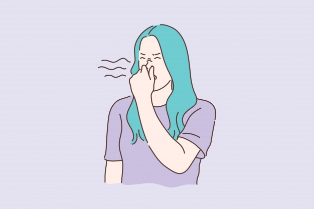
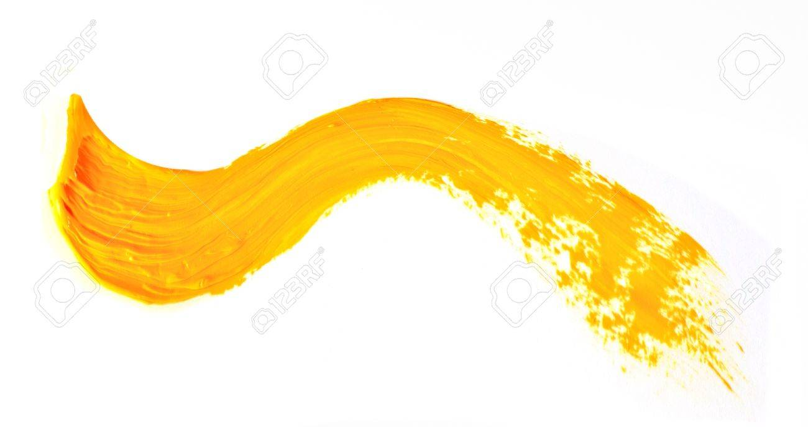

This page is a reference for some of the symbolism and imagery found in and around the wallpaper.
Mushrooms
The outside pattern is a florid arabesque, reminding one of a fungus. If you can imagine a toadstool in joints, an interminable string of toadstools, budding and sprouting in endless convolutions,—why, that is something like it.
Women Behind Bars
At night in any kind of light, in twilight, candlelight, lamplight, and worst of all by moonlight, it becomes bars! The outside pattern I mean, and the woman behind it is as plain as can be.
Yellow Color
It is the strangest yellow, that wallpaper! It makes me think of all the yellow things I ever saw—not beautiful ones like buttercups, but old foul, bad yellow things.
Smell
But there is something else about that paper—the smell! I noticed it the moment we came into the room, but with so much air and sun it was not bad. Now we have had a week of fog and rain, and whether the windows are open or not, the smell is here.
Yellow ‘Smooch’
There is a very funny mark on this wall, low down, near the mopboard. A streak that runs round the room. It goes behind every piece of furniture, except the bed, a long, straight, even smooch, as if it had been rubbed over and over.
